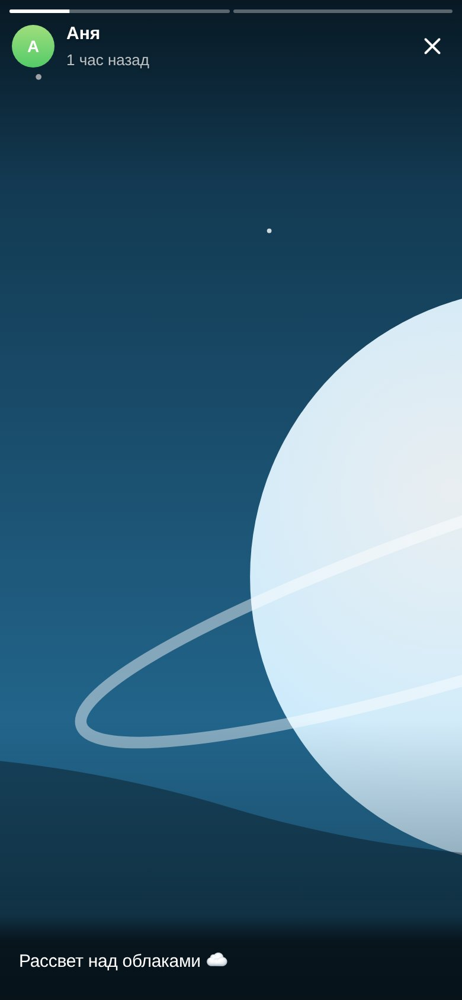
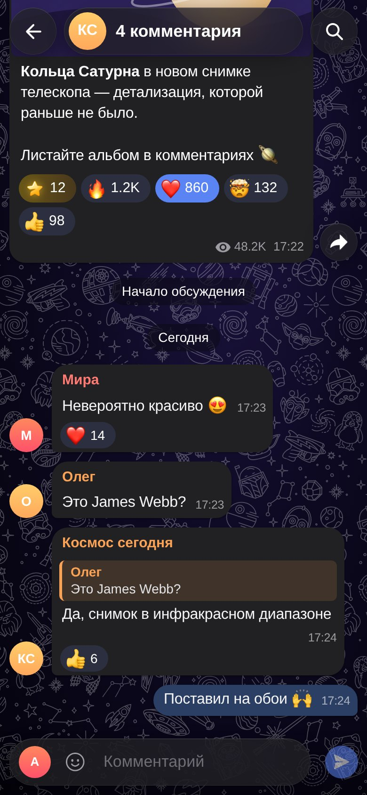
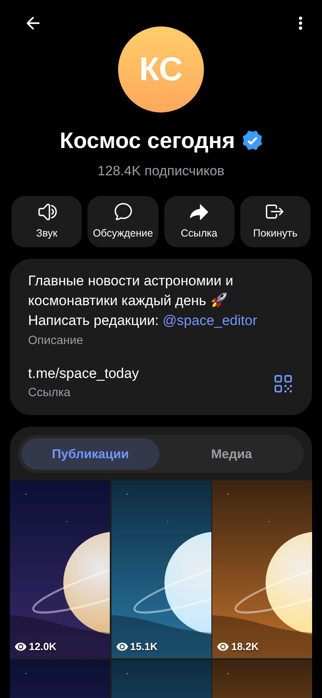
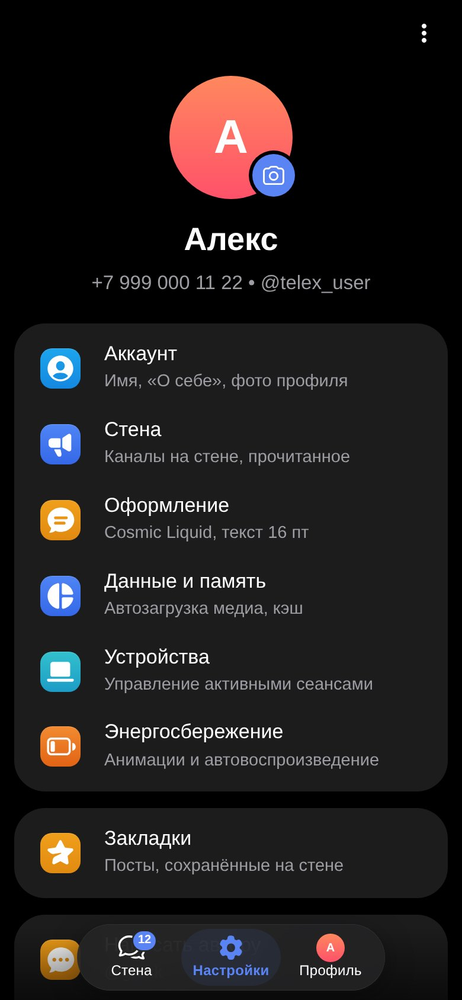

TeleX — стена каналов
Все ваши каналы одной лентой, истории, комментарии и реакции. Для тех, кто читает, а не переписывается.
TeleX собирает публикации всех ваших каналов в одну ленту, как в Telegram: истории, комментарии, реакции и премиум-эмодзи. Без лишних чатов — только то, что вы читаете.
Бесплатно · открытый код · вход хранится только на вашем устройстве
Одна учётная запись Telegram, вход общий: войдёте в одном — второй откроется сразу.
Все ваши каналы одной лентой, истории, комментарии и реакции. Для тех, кто читает, а не переписывается.
Полноценный клиент Telegram: список чатов с папками и архивом, переписка, ответы, файлы, поиск — как в Telegram для Android.
Знакомый интерфейс Telegram для Android — те же иконки, жесты и анимации.
Новые публикации из всех подписок в одной ленте. Скрывайте лишние каналы в настройках.
Ряд историй как в Telegram: кольца непросмотренных, жесты, видео со звуком.
Обсуждения под постами, ответы, поиск по комментариям и отправка своих.
Обычные и премиум-реакции, анимированные стикеры и эмодзи из наборов.
Мгновенные превью, умная очередь загрузки, видео начинается без ожидания.
Работает напрямую с серверами Telegram. Никаких своих серверов и сбора данных.
Тёмная тема, стеклянные панели и обои — всё как вы привыкли.




В браузере, на Android или Windows — установка не обязательна.
По QR-коду из приложения Telegram или по номеру телефона.
Каналы соберутся в ленту, новые посты появятся сами.
Темы, виджеты и расширения — один файл .module. Скачайте и установите в приложении: Настройки → Моды.
Официальные моды можно ставить прямо из приложения. Свой мод — по документации; нейросеть соберёт его по инструкции для агентов.
Все версии бесплатные и обновляются автоматически.
Android может попросить разрешить установку из неизвестных источников — это нормально для приложений не из Google Play.
Нет. TeleX — независимый проект с открытым кодом. Он подключается к Telegram через официальный API, так же как другие сторонние клиенты.
TeleX работает напрямую с серверами Telegram, без посредников. Данные входа хранятся только на вашем устройстве. Сеанс можно завершить в любой момент: в TeleX («Настройки → Устройства») или в самом Telegram.
Нет, TeleX сделан для чтения каналов: лента, истории, комментарии и реакции. Личные чаты остаются в Telegram.
Веб-версия всегда свежая. Android-приложение само проверяет обновления и предлагает установить новую версию.